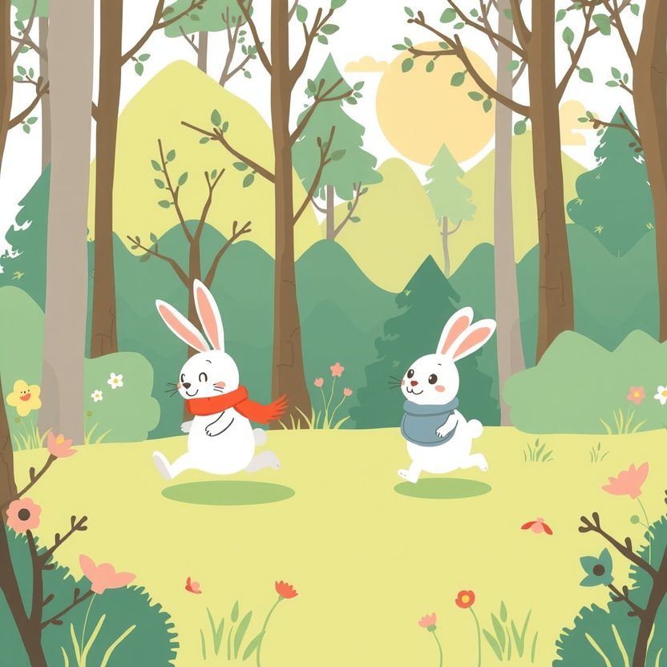

Titistoire › Les Étoiles (3-6 ans)
Rosie et son pot de colle
Une histoire de Rosie la lapine pour parler de : petit frère, petite sœur.

▶ Écouter et regarder l'histoire
Gratuit, sans inscription : la voix lit, le texte suit mot à mot, les images tournent comme dans un album.
Le texte de l'histoire
Rosie a un petit frère. Son nom ? Pompon. Il est haut comme trois carottes, il a deux oreilles toutes courtes, et une seule idée dans la vie : faire tout comme Rosie.
Si Rosie saute, Pompon saute. Si Rosie se gratte l'oreille, Pompon se gratte l'oreille. Si Rosie dit « Zut ! », Pompon dit « Zut ! », et c'est elle qui se fait gronder.
« Maman ! Il me colle ! se lamente Rosie. C'est pas un frère, c'est un pot de colle ! » « Pot de colle ! » répète Pompon, ravi, bien à l'abri contre maman.
Aujourd'hui, Rosie a un projet de grande : avec Filou et Noisette, elle va grimper jusqu'au sommet de la colline aux Fraises, là où mûrissent les fraises des bois les plus grosses et les plus parfumées.
« Moi aussi ! Moi aussi ! » supplie Pompon, dressé sur la pointe des pattes. Rosie secoue la tête. « Non, Pompon. C'est trop loin. Tu es trop petit. Tu marches trop lentement. »
« Emmène ton frère, décide maman. Et tiens-lui bien la patte. » Rosie lève les yeux au ciel et pousse un énorme soupir. Sa journée est fichue.
Sur le sentier, Pompon s'arrête à chaque pas. Pour un caillou. Pour une fourmi. Pour faire pipi. Pour dire bonjour, nez contre cornes, à un escargot qui ne lui a rien demandé.
« Dépêche-toi ! » Filou et Noisette sont déjà loin devant. Rosie trépigne. Pompon admire un caillou.
Alors Rosie a une idée. Pas une très belle idée. « Pompon, on joue à cache-cache ! propose-t-elle d'une voix toute sucrée. Tu comptes jusqu'à dix, là, contre ce gros chêne. Et tu ne bouges pas. »
Pompon est fou de joie. Rosie joue avec lui ! Vite, le nez contre l'écorce, il cache ses yeux. « Un… deux… trois… cinq… »
Rosie s'éclipse sur la pointe des pattes. Bientôt, elle rattrape ses amis. Elle court, elle grimpe, elle rit. Enfin libre ! « Je reviendrai le chercher tout à l'heure », se promet-elle.
Les fraises sont énormes, rouges, sucrées. Rosie en croque une, deux, dix, du jus plein le menton. Mais c'est drôle : à la onzième, elle leur trouve un petit goût de rien.
Le ciel vire à l'orange. « Il compte bien longtemps, ton frère », remarque Noisette. Rosie regarde en bas. La forêt est grande, toute sombre déjà. Et Pompon est très petit.
Elle revoit sa frimousse, tout à l'heure. Tellement content de jouer. La fraise lui tombe des pattes. Dans son ventre, toutes les autres se changent en cailloux.
Rosie dévale la colline. Jamais elle n'a couru aussi vite. Voilà le gros chêne. Elle en fait le tour. Une fois. Deux fois. Personne. Rien que de l'herbe couchée.
« Pompon ? » Sa voix fait un tout petit bruit dans la grande forêt. Elle met ses pattes en porte-voix. « POMPON ! » Rien. Juste une chouette qui s'éveille.
Dans la terre molle, il y a des empreintes de pattes, toutes petites. Rosie les suit, le nez au ras du sol. Elles tournent, elles hésitent, elles filent vers le ruisseau. Et là, accroché à une ronce, un bout de tissu bleu. Son bavoir.
Rosie le serre contre son cœur. « C'est pas un pot de colle, dit-elle tout haut. C'est mon frère. » Une larme roule sur sa joue. Elle a très, très peur.
Un petit bruit. Snif. Sous une grande fougère, une petite boule blanche tremblote. « Dix ! J'ai compté jusqu'à dix, renifle Pompon. Plein de fois. Mais tu venais pas. Alors je t'ai cherchée. »
Rosie le serre si fort qu'il fait « couic ». « Pardon, Pompon. C'était pas du cache-cache. Je t'ai laissé tout seul. C'était méchant. Je ne le ferai plus jamais, jamais. »
Pompon ouvre sa patte. Au creux, il y a une fraise des bois, toute petite, tout écrabouillée. « Je l'ai trouvée. C'est pour toi », annonce-t-il fièrement. C'est la meilleure fraise que Rosie ait jamais mangée.
Elle le ramène sur son dos, parmi les lucioles. Bien avant la maison, il s'endort, le museau niché dans son cou. Il est lourd, finalement, pour trois carottes.
Le dimanche suivant, Rosie retourne à la colline aux Fraises. Lentement. Très lentement. Avec une halte pour chaque caillou, chaque fourmi et chaque escargot.
« C'est qui, le petit qui te suit partout ? » s'étonne un hérisson qui passe par là. Rosie prend la patte de Pompon dans la sienne. « Lui ? C'est mon pot de colle. Et personne d'autre n'a le droit de l'appeler comme ça. »